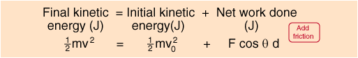

Work and the Work-Energy Principle
Start with a mass m of
kg and an initial velocity v0=
m/s.
Force angle =
degrees. Work
J=
N x
x
m. 
Final kinetic energy
J = Initial KE
J + Net work
J
From the final kinetic energy, the final velocity is
m/s.
Index
Work-energy principle
HyperPhysics
*****
Mechanics
R Nave
Go Back